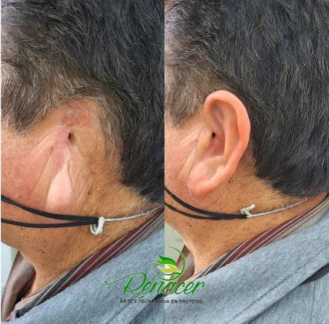

Encuentra los diferentes implantes que pueden existir en cada parte del cuerpo.

La cabeza tiene muchas estructuras que se pueden dañar, pero con ayuda de una prótesis se pueden arreglar. Algunos ejemplos son los implantes cocleares, prótesis dentales, implantes oculares, prótesis del pabellón auricular, prótesis craneofaciales, etc.
La parte de la columna vertebral que pasa por el cuello se llama la columna cervical, y al igual que el resto de la columna, es propensa a tener afectaciones como hernias que se pueden solucionar con prótesis e implantes.